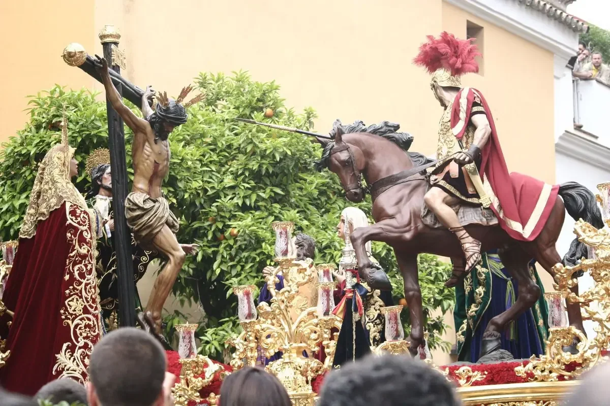
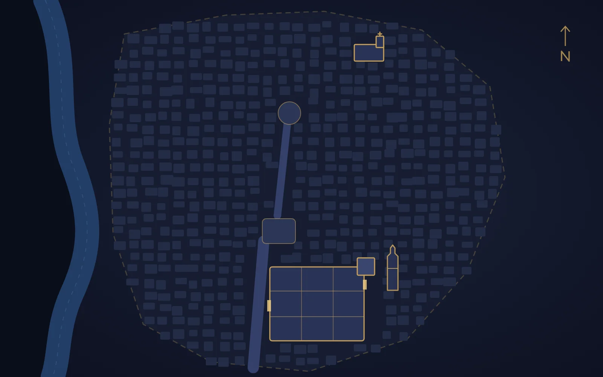
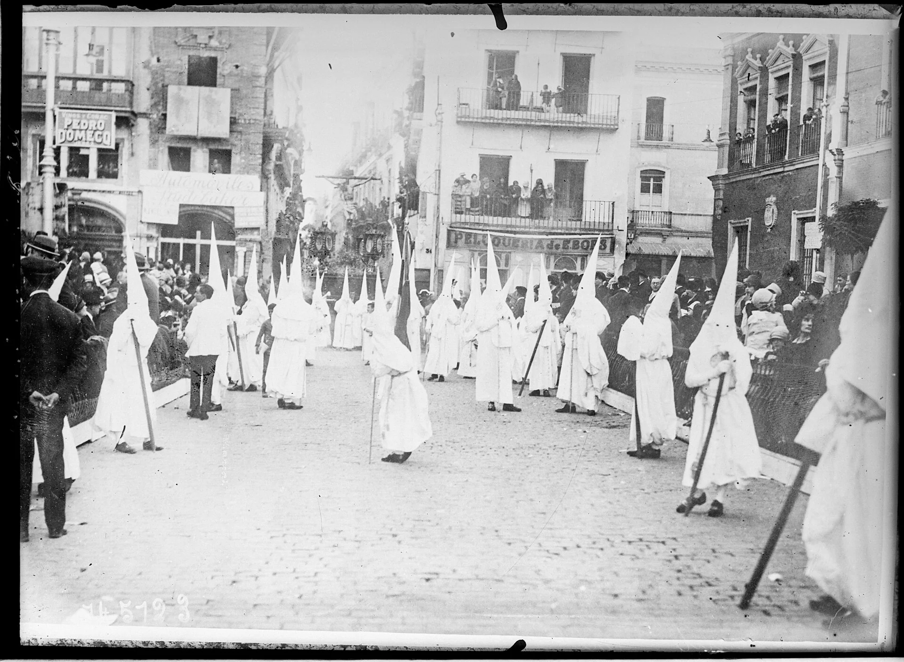
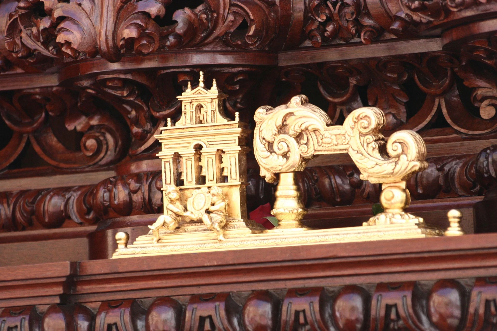
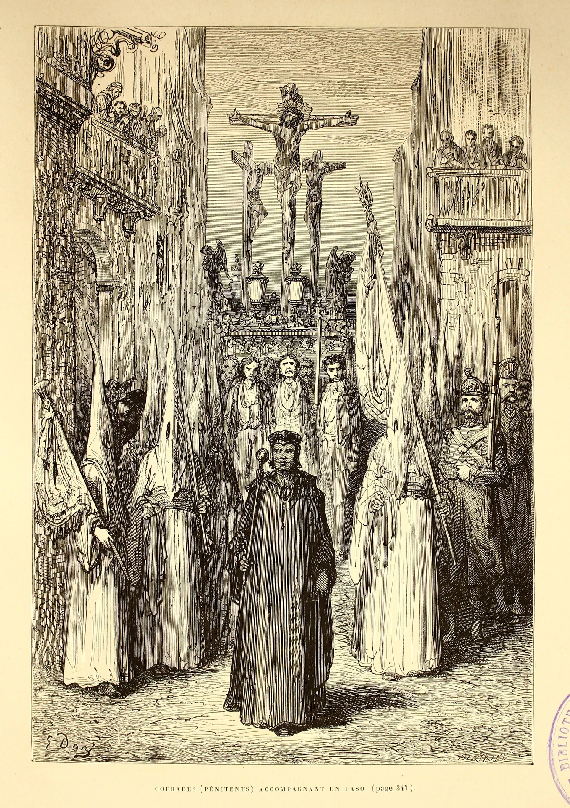
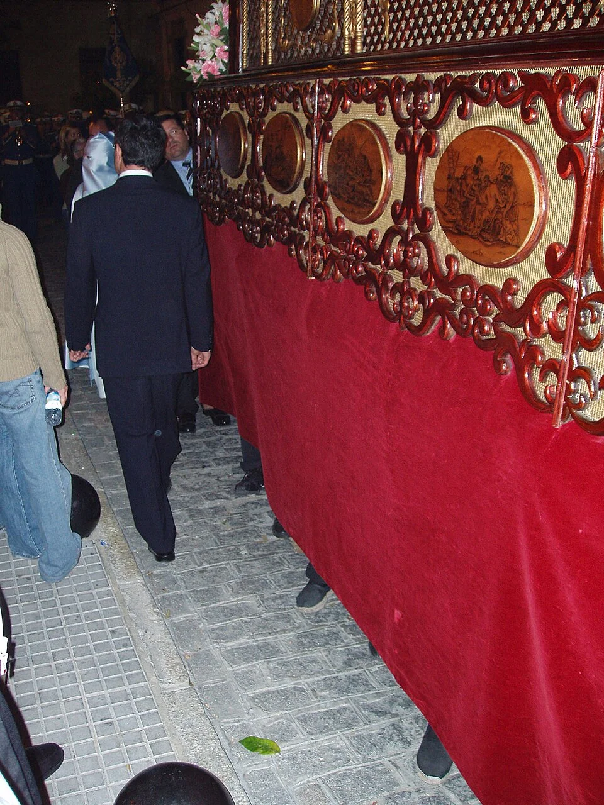

아직 펼치지 않은 카드거리로 나온 성주간 · 2세비야 성주간 행렬세비야의 성주간, 커다란 가마가 저절로 움직이는 것처럼 보여요. 가마를 메는 사람들은 어디에 있을까요?커다란 가마가 혼자 걸어가는 것 같대! 사람들은 어디 숨었을까?
해마다 부활절 앞 한 주스페인 세비야 · 400년 넘게 이어진 대성당 가는 길
세비야 성주간 행렬
세비야의 성주간에는 형제회마다 커다란 가마를 메고 자기 성당에서 대성당까지 걸어요. 가마 밑에서는 천에 가려진 사람들이 카파타스의 망치 소리에 맞춰 가마를 들어 올려요. 앞면 사진의 라 란사다 형제회가 걷는 길을 따라가 보세요.
커다란 가마 밑에 사람들이 숨어서 걸어간대! 망치 소리가 나면 가마가 번쩍 들려. 같이 따라가 볼까?
검수 전 시안이에요(기준서 1판). 장면에는 세비야 관광청의 성주간 안내서와 안달루시아 정부 기록, 1930년 사진과 1874년 판화, 시인이 옮겨 적은 민요에 있는 것만 옮겼어요. 약도와 망치 소리는 이 안내서가 만들었어요. 상상은 ‘눈 감고 상상해 보기’에만 썼어요.
시안 확인용카드 단계 미리 보기
1
자기 성당에서 대성당까지
세비야의 성주간에는 예순~일흔 곳의 형제회가 저마다 자기 성당을 나와 대성당까지 걸어요. 대성당까지 가는 이 길을 ‘참회의 길(에스타시온 데 페니텐시아)’이라고 해요.
세비야 관광청은 모든 형제회가 라 캄파나 광장부터 대성당까지 정해진 같은 길, ‘카레라 오피시알(공식 길)’을 지나야 한다고 알려 줘요. 앞면 사진의 라 란사다 형제회가 걷는 길을 따라가 보세요.
‘다음 곳으로’를 눌러 라 란사다 형제회의 길을 따라가 보세요.

산마르틴 성당라 캄파나시에르페스 거리산프란시스코 광장대성당다시 산마르틴 성당세비야 옛 시가지 약도(밤) · 실제 거리 비율과 달라요 · 이 안내서가 그린 약도 · 세비야 관광청 성주간 안내서의 공식 길(카레라 오피시알)을 바탕으로
저녁에 나선 가마가, 자정을 넘겨 성당으로 돌아왔어요.
약도는 이 안내서가 그렸고, 실제 거리 비율과 달라요. 시간은 2026년 성주간 수요일의 예정표예요.
성당에서 나와서 큰 대성당까지 걸어가. 같이 따라가 볼까?
물어보기저녁에 나선 가마는 몇 시에 돌아왔을까?
2
말없이 걷는 나사레노
1930년, 산프란시스코 광장을 지나는 나사레노들이에요. 형제회원들은 얼굴을 가리는 두건과 뾰족한 고깔을 쓰고, 이름을 드러내지 않은 채 긴 초를 들고 걸어요.
행렬 맨 앞에는 길을 여는 십자가 ‘크루스 데 기아’가 서요. 사진 멀리 뒤쪽으로 십자가상을 얹은 가마가 다가오고, 둘레 건물의 발코니마다 사람들이 가득해요.

고깔 두건을 쓴 사람들이 긴 초를 들고 걸어가!
물어보기두건을 쓰면 누가 누군지 알 수 있을까?
3
망치 소리, 하늘로
가마 앞쪽에는 문 두드리개처럼 생긴 쇠망치 ‘야마도르’가 달려 있어요. 가마 밑 사람들을 이끄는 ‘카파타스’는 이 망치로 지시를 보내요.
망치 소리에 맞춰 가마 밑 사람들이 한꺼번에 가마를 들어 올리는 순간을 ‘레반타’라고 해요. 이때 카파타스와 가마꾼들은 ‘하늘로 올려라(알 시엘로 콘 에야)!’ 하고 외쳐요.

똑, 똑, 똑! 망치 소리가 나면 가마가 번쩍 들려.
물어보기망치 소리를 들으면, 가마 밑 사람들은 무엇을 할까?
4
발코니에서 부르는 노래
가마가 멈추면, 둘레의 발코니에서 누군가 노래를 시작하기도 해요. 세비야 관광청은 이 노래 ‘사에타’를 ‘플라멩코 노래가 된 기도’라고 풀어 줘요.
시인 안토니오 마차도는 시 「사에타」 첫머리에, 사람들이 부르던 사에타 한 대목을 옮겨 적었어요.

“누가 내게 사다리를 빌려주려나. 십자가 나무에 올라가, 나사렛 예수의 못을 뽑아 드리게.”
민요 사에타 · 안토니오 마차도가 시 「사에타」 첫머리에 옮겨 적음(『시 전집』, 1917년) · 이 안내서가 옮김
그림은 1874년에 나온 다비이에 남작의 책 『스페인』에 실린 귀스타브 도레의 판화예요. 좁은 골목 양쪽 발코니에서 사람들이 가마를 내려다봐요.
발코니에서 누가 노래를 불러. 가마가 멈춰서 들어.
물어보기그림에서 발코니에 선 사람들을 찾아볼래?
5
보이는 것은 발뿐
가마 밑에서는 ‘코스탈레로’들이 목덜미와 어깨로 무게를 받치며 가마를 메요. 가마 둘레를 감싼 천 ‘팔돈’이 그들을 가려서, 밖에서는 보이지 않아요.
그래서 가마가 지나갈 때 보이는 것은, 천 아래로 살짝 나온 발뿐이에요. 이 사진은 세비야가 아니라 같은 안달루시아 지방의 엘푸에르토데산타마리아에서 2006년 종려주일에 찍었어요.

코스탈레로라는 이름은 머리와 목에 감는 천 ‘코스탈(자루)’에서 왔어요. 가마 아래를 가로지른 나무 ‘트라바하데라’에 몸을 대고, 가마 하나를 스물네 명에서 쉰네 명쯤이 함께 메요.
가마 밑에 사람들이 숨어 있어. 보이는 건 발뿐이야!
물어보기천 아래로 나온 발을 몇 개 찾을 수 있어?
눈 감고 상상해 보기
좁은 골목에 밀랍 타는 냄새와 향 냄새가 가득해요. 수백 개의 촛불이 흔들리고, 웅성거리던 사람들이 문득 조용해져요. 천 아래에서 맞춰 걷는 발소리가 사각사각 다가오고, 어느 발코니에서 누군가 목을 놓아 노래를 시작해요.
눈을 감아 봐. 촛불 냄새가 나. 사각사각, 가마 밑에서 발소리가 다가와.
나의 자리
천에 가려진 가마 밑에서, 코스탈레로는 무엇을 듣고 무엇을 믿으며 한 걸음씩 걸었을까요?
가마 밑에 숨어서 걸으면, 무슨 소리를 듣고 걸을까?
마음에 닿는 한 줄을 고르거나 직접 써 보세요. 한 줄을 남기면 이 자리의 도장이 찍혀요. 이 기기에만 저장돼요.
더 깊이
궁금한 칸만 펼쳐 읽어도 괜찮아요.
알고 보면
산마르틴 성당 라 란사다 형제회가 머무는 산마르틴 성당은, 페르난도 3세가 세비야를 되찾은 뒤 처음 세운 성당들 가운데 하나예요(안달루시아 정부). 지금의 건물은 15세기에 올렸고, 1755년 리스본 대지진 뒤 크게 고쳤어요(안달루시아 관광청). 이름난 조각가 후안 데 메사도 이 성당에 묻혔어요.
형제회의 말 세비야 관광청은 행렬을 여는 십자가를 ‘크루스 데 기아’, 가마를 감싼 벨벳이나 다마스크 천을 ‘팔돈’, 가마 밑을 가로지른 나무를 ‘트라바하데라’, 가마가 고르게 나아가는 것을 ‘안다르’라고 풀어 줘요.
한 시인의 다른 목소리 마차도는 시 「사에타」에서 민요 사에타를 옮긴 뒤, 자기는 십자가 나무의 예수보다 바다 위를 걸은 예수를 노래하고 싶다고 적었어요.
기록마다 다른 점
형제회는 몇 곳 세비야 관광청의 2023년 안내서는 예순 곳의 형제회가 백 개 넘는 가마를 낸다고 하고, 위키백과는 일흔 곳 가까이라고 적어요.
공식 길은 언제부터 세비야 관광청은 1605년 니뇨 데 게바라 추기경이 모든 형제회가 대성당까지 참회의 길을 걷도록 정했다고 적어요. 그가 1604년에 행렬을 바로잡으려 내놓은 규칙을 시작으로 보는 글도 있어요.
사진 속 발 가마 밑 발 사진은 세비야가 아니라 카디스주 엘푸에르토데산타마리아의 2006년 종려주일 행렬이에요.
직접 가 보기
확인한 날 · 2026년 11월 18일 · 바뀌기 쉬운 정보라 정기적으로 다시 확인해요
2027년 성주간은 종려주일인 3월 21일부터 부활절 3월 28일까지예요. 형제회마다 길과 시간은 해마다 새로 발표되니, 가기 전에 꼭 확인하세요.
대성당까지, 다시 성당까지 금박
여섯 곳을 끝까지 따라가면 카드에 금박이 입혀져요.
여섯 곳을 끝까지 따라가기
망치 소리 채색
둘 가운데 하나만 해도 카드가 채색돼요.
가마 앞 망치 두드려 보기
아이와 함께 ‘영화처럼 보기’를 끝까지 보기
근거 보기 (10)
- 세비야 관광청 「Semana Santa 2023」 안내서 — 공식 길(캄파나 → 시에르페스 → 산프란시스코 광장 → 콘스티투시온 거리 → 산미겔 문으로 들어가 팔로스 문으로), 코스탈레로·팔돈·카파타스·야마도르·레반타·‘알 시엘로 콘 에야’, 나사레노와 두건, 크루스 데 기아, 사에타, 예순 곳·가마 백 개 넘게
- 세비야 관광청 「Semaine Sainte 2024」(프랑스어) — 1605년 니뇨 데 게바라 추기경의 규칙, 야마도르(문 두드리개 같은 쇠망치), 레반타, 코스탈레로, 팔돈, 트라바하데라, 안다르, 사에타
- 세비야 시크레타(2026): 성주간 수요일 예정표 — 라 란사다 산마르틴 출발 17:50 · 캄파나 19:43 · 대성당 21:08 · 들어옴 00:57
- 안달루시아 정부 관보(BOJA, 2010) — 산마르틴 성당: 페르난도 3세의 정복 뒤 처음 세운 성당 가운데 하나, 지금 라 란사다 형제회의 자리
- 안달루시아 관광청: 산마르틴 성당 — 15세기 건물, 1755년 지진 뒤 고침, 라 란사다 형제회의 성상, 성주간 수요일의 참회의 길, 조각가 후안 데 메사가 묻힌 곳
- 프랑스 국립도서관(롤 통신사 사진, 1930) — 산프란시스코 광장을 지나는 나사레노들(위키미디어 공용 파일 정보)
- 안토니오 마차도 『시 전집』(1917, 프로젝트 구텐베르크) 「사에타」 — 첫머리의 민요 사에타와 시의 끝
- 위키미디어 공용: 다비이에 『스페인』(1874)의 도레 판화 · 엘푸에르토데산타마리아의 발 사진 정보
- 위키백과 「세비야 성주간」 — 코스탈(자루)이라는 이름, 가마 하나에 24~54명(길잡이로만)
- 위키백과 「크루스 델 캄포 십자가의 길」 — 1604년 니뇨 데 게바라의 행렬 규칙(길잡이로만)
그림·사진·소리 출처
- 이 안내서가 그린 약도 · 세비야 관광청 성주간 안내서의 공식 길(카레라 오피시알)을 바탕으로
- 사진: 롤 통신사(Agence Rol) · 퍼블릭 도메인 · 프랑스 국립도서관 · 위키미디어 공용
- 사진: 앙헬 카촌(Sjaces) · CC BY-SA 3.0 · 위키미디어 공용
- 그림: 귀스타브 도레(다비이에 『스페인』, 1874년) · CC BY 2.0 · 위키미디어 공용
- 사진: 에밀리오 J. 로드리게스 포사다 · CC BY-SA 3.0 · 위키미디어 공용
- 사진: Sjace · CC BY 2.0 · 위키미디어 공용
- 가마 앞 쇠망치(야마도르) 소리 · 이 안내서가 만든 컴퓨터 소리(세비야에서 녹음한 것이 아니에요)
‘처음 만나는 기독교 문화’의 깊은 카드예요. 카드 단계와 남긴 글은 이 기기에만 저장돼요.